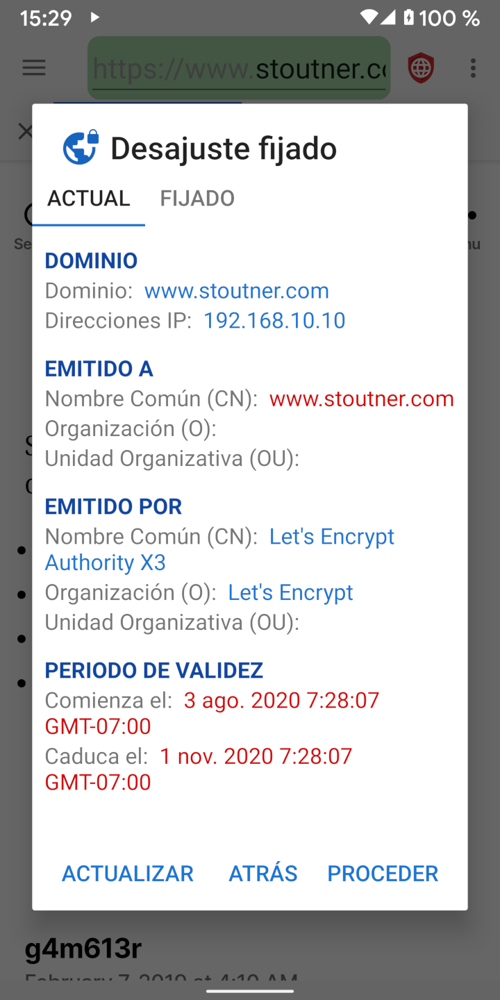
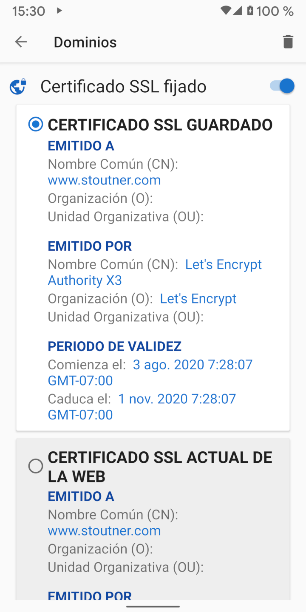

Al visitar una URL cifrada (que empieza con HTTPS), el servidor web usa un certificado SSL para cifrar tanto la información enviada al navegador como asimismo para identificar al servidor. El propósito de la identificación del servidor es para prevenir que una máquina ubicada entre el navegador y el servidor web pretenda ser el servidor y descifrar la información en tránsito. Este clase de ataque es conocido como Hombre en Medio (MITM en sus iniciales en inglés). Los certificados SSL son generados por las autoridades certificadoras: compañías que verifican la identidad de un servidor y producen un certificado a cambio de una tarifa. Android tiene una lista de autoridades certificadoras de confianza y aceptará cualquiera de sus certificados para cualquier página web. Se supone que no es posible que una organización adquiera un certificado SSL para un dominio que no controla, pero en la práctica muchos gobiernos y grandes corporaciones han sido capaces de hacerlo.
Al fijar un certificado SSL se le indica al navegador que sólo se puede confiar en un certificado SSL específico para un dominio en particular. Cualquier otro certificado, aunque sea válido, será rechazado.
Los certificados SSL expiran en una fecha especificada, por lo que incluso los certificados SSL fijados necesitarán legítimamente ser actualizados de vez en cuando. Como regla general, fijar los certificados SSL probablemente no sea necesario en la mayoría de los casos. Pero para aquellos que sospechan que organizaciones poderosas puedan estar apuntando hacia ellos, la fijación de certificados SSL puede detectar y frustar un ataque MITM. Navegador Privado también tiene la capacidad de fijar direcciones IP.
Los certificados SSL pueden ser fijados en Configuración de Dominios. Además de proteger contra ataques MITM, fijar un certificado autofirmado para un dispositivo como un router inalámbrico o punto de acceso eliminará el mensaje de error que se presenta normalmente cada vez que se carga su página web. Al tocar la pestaña activa se muestra el certificado SSL de la página web actual.